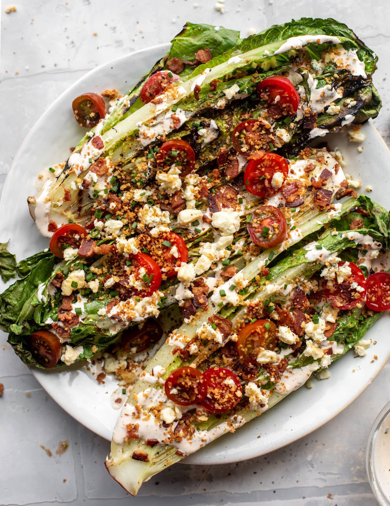

Grilled Romaine Salad

Description
Grilled romaine lettuce is a simple yet unexpectedly flavorful dish that transforms an ordinary leafy green into something smoky, tender, and slightly charred. By placing halved romaine hearts directly on a hot grill, the outer leaves become crispy and caramelized, while the inner core stays crisp and juicy. This contrast in texture makes grilled romaine a unique base or side dish that stands out from traditional salads.
The process is quick and easy. Romaine hearts are typically brushed with olive oil and seasoned with salt and pepper before hitting the grill. After just a couple of minutes on each side, they develop beautiful grill marks and a rich, smoky flavor. Some variations include a squeeze of lemon juice, a sprinkle of parmesan cheese, or a drizzle of balsamic glaze to enhance the taste and add a touch of brightness or umami.
Grilled romaine is versatile and can be served warm or at room temperature. It pairs well with proteins like grilled chicken, steak, or shrimp, and is also delicious with a creamy Caesar or herb vinaigrette dressing. Whether used as a unique salad base or as a flavorful vegetable side, grilled romaine offers a fresh twist on a familiar ingredient.
Ingredients
- 4 slices bacon, cooked and crumbled
- 1/2 cup seasoned breadcrumbs
- 1 tablespoon unsalted butter
- 1 garlic clove, minced
- 4 stalks romaine lettuce, sliced in half
- olive oil, for brushing
- kosher salt and pepper
- 1 cup cherry tomatoes, quartered or halved
- 1/3 cup ranch dressing
- 1/4 cup crumbled blue cheese
- 2 tablespoons chopped fresh chives
Steps
- Preheat the grill to high heat.
- To start, I like to cook the bacon so it’s ready to go. Fry the bacon and place it on a paper towel lined plate to remove excess grease.
- I also toast the breadcrumbs! To toast them, melt butter in a nonstick skillet. Add the breadcrumbs and garlic and stir to coat, then cook for 5 to 6 minutes, stirring often, until golden and fragrant. Remove from the heat.
- Brush the cut sides of the romaine with olive oil. Sprinkle all over generously with salt and pepper. When the grill is hot, reduce the heat to medium. Place the romaine stalks on the grill, cut side down. Grill for 1 to 2 minutes, until the lettuce becomes charred, then flip over and grill for an additional 1 minute. Remove the romaine from the grill.
- You can serve the romaine family style on a large platte or 1 or 2 stalks on a plate. Drizzle the romaine all over with the ranch dressing - as much as you’d like. Top with the tomatoes, crumbled bacon, blue cheese crumbles and fresh chives. Sprinkle the toasted breadcrumbs all over.
- Serve immediately!
Home